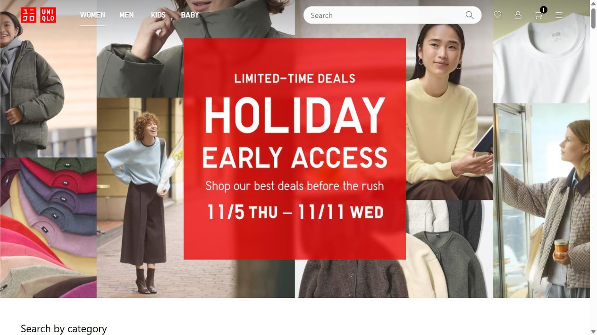
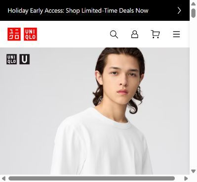
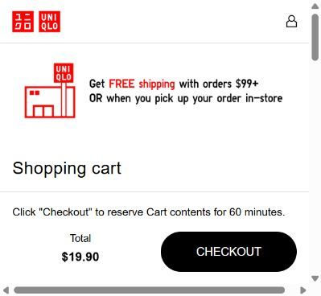
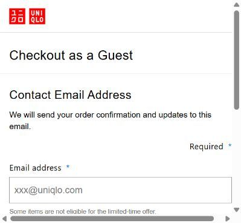

STUDY 01 / UNIQLO
Everyday utility.
Guidance before guesswork.
A practical essential presented through product information, styling examples and a guest-checkout option.
Original retailer routes: Homepage · Selected product · Store / cart entry. Session-state checkout URLs are not reproducible.
01 / CAPTURED EVIDENCE
The journey, in four screens.








Original browser captures extracted from the earlier research file. Click each image to read it at full size. Captures do not show every claim described in the session notes; those are distinguished below.
02 / OBSERVATION
What the original session recorded.
The recorded tee page provided color and size controls, a size guide, product-information sections and styling examples. The session record notes a dated offer ending November 11, a bestseller badge and a 4.6 rating with 999+ reviews. These are retailer-displayed signals, not independently authenticated reviews or inventory.
03 / INTERPRETATION
Everyperson, with Sage cues
The familiar basic and everyday-use framing suggest approachable belonging. Fit guidance and structured explanations add an informed, practical voice. This is an analyst reading of the sampled communication, not UNIQLO’s declared archetype.
Design: function, hierarchy and expression
The product controls use repeated categories and a task-focused hierarchy. The homepage combines a central red promotion with cropped clothing and people. That juxtaposition invites a limited collage reading, while the purchase interface remains functional. It does not establish that the entire brand is postmodern.
04 / SHOPPING PATH
From product to the stopping point.
- Open the selected white Crew Neck T-Shirt.
- Choose S and add one item to the cart.
- Review the $19.90 item; shipping and tax remain TBD.
- Choose checkout, then “Checkout as a guest” from the account-choice panel.
- Stop at contact-email entry; no email or payment supplied.
A guest route exists, but the account-choice panel adds a decision. Shipping and tax were still unresolved at the stop point. The extracted product, cart and guest-entry captures show a constrained content area and horizontal scrollbars; that is a capture-session limitation, not proof of a universal site defect.
05 / PERSUASION
Visible cue → possible mechanism → limit.
| Reading | Recorded cue | Interpretation & boundary |
|---|---|---|
| Social proof | Bestseller label and review volume recorded on product page. | May reduce uncertainty through others’ judgments; authenticity and effect unverified. |
| Scarcity / time boundary | Dated offer and a 60-minute reservation message. | An offer deadline and a reservation are different; neither proves low stock. |
| Liking | Styled people and outfit examples. | May help shoppers imagine wearing the tee; no measured effect. |
06 / PROJECT IMPLICATION
What we take into On the Go.
Borrow the clarity of size, action and supporting information. Since styling examples already exist, make our help specific to meeting friends and explain one useful pairing move.
Follow this finding to a story and check →